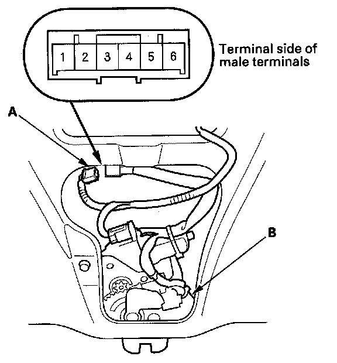

Power Tailgate Latch/Ratchet Switch Test
Power Tailgate Latch/Ratchet Switch Test1. Remove the tailgate trim panel.

2. Disconnect the 6P connector (A) from the tailgate closer unit (B).

3. Check for continuity between the terminals in each latch position according to the table.
4. If the continuity is not as specified, replace the tailgate latch assembly.